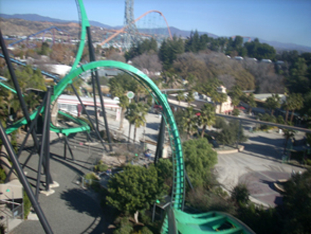
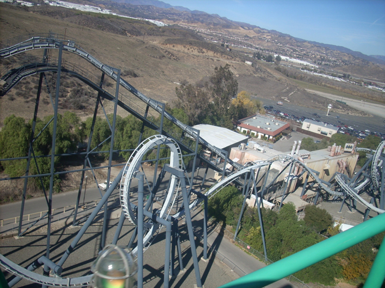
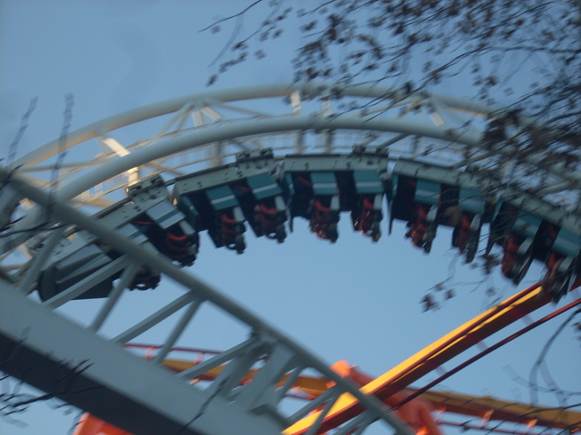

Last 2007 Update
 Ok, This is the Last 2007 Update. And this time I mean it!!! No suprise punkings like last year. Anyways, Here's some Halfass painted X. Oops, Sorry. I meant halfass painted X2.
Ok, This is the Last 2007 Update. And this time I mean it!!! No suprise punkings like last year. Anyways, Here's some Halfass painted X. Oops, Sorry. I meant halfass painted X2.
 Hey Bob, Now that we painted half of the raven turn, how about we go paint the horseshoe today? But Johnny, If we keep painting random sections of the ride, it won't open on time. Hey Bob, I don't give a sh*t!!! My life sucks!!! My girlfriend just dumped me, My parents are dead and I'm a painter at a freaking Six Flags Park. Besides, It serves them right for stealing this god damn color scheme.
Hey Bob, Now that we painted half of the raven turn, how about we go paint the horseshoe today? But Johnny, If we keep painting random sections of the ride, it won't open on time. Hey Bob, I don't give a sh*t!!! My life sucks!!! My girlfriend just dumped me, My parents are dead and I'm a painter at a freaking Six Flags Park. Besides, It serves them right for stealing this god damn color scheme.
 And now, it's time to ride Riddlers Revenge.
And now, it's time to ride Riddlers Revenge.
 Yummy Dive Loop Goodness.
Yummy Dive Loop Goodness.

Riddlers was running good today.
You've probably heard by now that Cody stands up on sit down rollercoasters. So why is he sitting down on the stand up coaster?
 More Twisty Goodness.
More Twisty Goodness.

Here you can see Batman the Ride from Riddlers Lifthill.
No Smoking Please. We can't afford to have any more filth on this sign.
Up next, Scream.
 Cobra Rolls are awsome. (This caption sucked.)
Cobra Rolls are awsome. (This caption sucked.)
 I'm riding Scream barefoot with my restraint loose. What could possibly go wrong?
I'm riding Scream barefoot with my restraint loose. What could possibly go wrong?
 More Twisty Goodness. (Did I just repeat a caption?)
More Twisty Goodness. (Did I just repeat a caption?)
 I'm not going to even try and write captions anymore.
I'm not going to even try and write captions anymore.
 Goliath in the clouds. (HA HA!! YOU JUST GOT PUNKED!!! I WROTE THIS CAPTION!!!!)
Goliath in the clouds. (HA HA!! YOU JUST GOT PUNKED!!! I WROTE THIS CAPTION!!!!)
 I just saw Death. In the Fake Death Helix. But if the death helix is fake, how can you see death?
I just saw Death. In the Fake Death Helix. But if the death helix is fake, how can you see death?
 Superman the Escape. Everything about it is overated. It's not that tall, It's not that loud, It's not that fun, and there is no airtime.
Superman the Escape. Everything about it is overated. It's not that tall, It's not that loud, It's not that fun, and there is no airtime.
 They should run Flashback right now, Just to see it crash.
They should run Flashback right now, Just to see it crash.
 Is dipping sauce included with the pretzal loop?
Is dipping sauce included with the pretzal loop?
 Good Bye SFMM. See you in 20 days.
Good Bye SFMM. See you in 20 days.

Stupid Peice of Sh*t Revolution with it's sh*tty OTSRs and it's sh*ty trim brakes. I almost hate it as much as I hate Mean Streak. Almost.
That's a violation of the First Ammendment! I'm consulting Congress Damn it!
Home